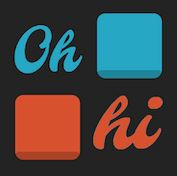

EECS 183: Elementary Programming Concepts
Fundamental concepts and skills of programming in a high-level language. Flow of control: selection, iteration, subprograms. Data structures: strings, arrays, records, lists, tables. Algorithms using selection and iteration (decision making, finding maxima/minima, searching, sorting, simulation, etc.). Good program design, structure and style are emphasized. Testing and debugging.
Project 1: Cupcakes.cpp
This is the first project that I ever completed in C++ and it involves a customizable recipe for cupcakes based on a user input of people that need to be served. What happens is that a user is first asked 'How many people do you need to serve?'. Based on the input, the various ingredients in the standard cupcake recipe are calculated and configured to make exactly the amount of cupcakes needed to serve the user inputted number. Then, a few short seconds later, an ingredient list is generated as well as a total expected cost of ingredients based on standard prices given to us. The main goal for this project was to get us to understand the basics of creating a simple program and performing calculations. Since this was a school project, I cannot post the code,so contact me if you would like to view my code for this project!
Project 2: Birthdays.cpp
 This is the second project that I completed in C++ and it is a program that allows users to choose from a variety of options. For example, users can select the calculate birthday day option which prompts them to type in their birthday, select a year within the Gregorian calendar, and then outputs the day of the week that their inputted date would fall on. The program also counts and outputs the number of leap years from the start of the Gregorian calendar to a user inputted year. The main goal for this project was to introduce us to recognizing valid input when users are given a menu of options to choose from, and also to have a program that can perform multiple different tasks. Since this was a school project, I cannot post the code,so contact me if you would like to view my code for this project!
This is the second project that I completed in C++ and it is a program that allows users to choose from a variety of options. For example, users can select the calculate birthday day option which prompts them to type in their birthday, select a year within the Gregorian calendar, and then outputs the day of the week that their inputted date would fall on. The program also counts and outputs the number of leap years from the start of the Gregorian calendar to a user inputted year. The main goal for this project was to introduce us to recognizing valid input when users are given a menu of options to choose from, and also to have a program that can perform multiple different tasks. Since this was a school project, I cannot post the code,so contact me if you would like to view my code for this project!
Project 3: ohhi.cpp
This is the third project that I completed in C++ and it is a program that allows a user to play a more simplified version of the ohhi game. If you aren't familiar with the ohhi project, then click here to play a round or two of the fun logic game! What we had to do was learn the rules of the game and translate that into code for our program. This project challenged us to write pseudocode and really think about our logic before we even wrote a line of code. This project also focused heavily on testing because there were a lot of invalid user inputs we needed to make sure that we caught. Since this was a school project, I cannot post the code,so contact me if you would like to view my code for this project!